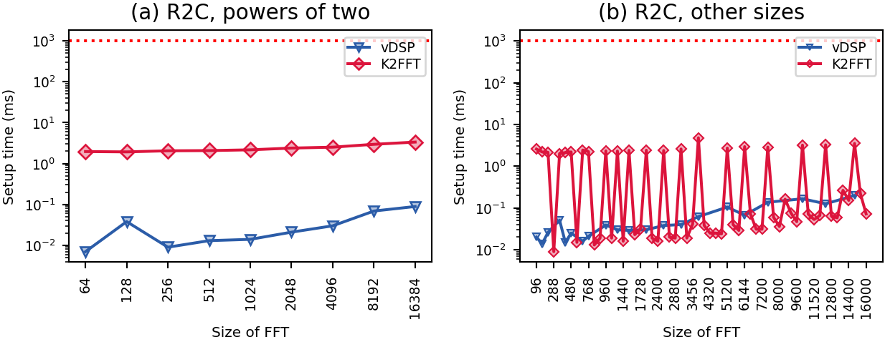
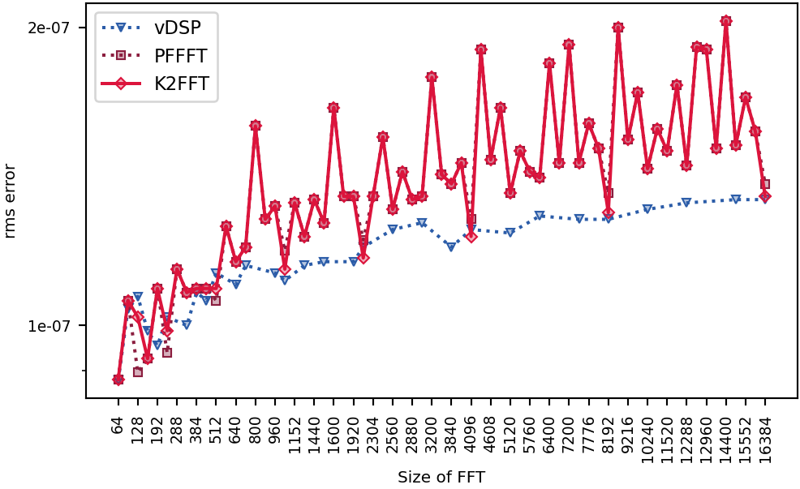

Apple M1 (Virtual)
.
Darwin sjc22-bm210-123b96ae-8583-4b44-9e04-bb77042dd6e9-2649C83C02E6.local 24.6.0 Darwin Kernel Version 24.6.0: Sun Oct 11 23:44:11 PDT 2026; root:xnu-11417.140.69.713.47~2/RELEASE_ARM64_VMAPPLE arm64
Runner image: macos15 20261104.0514.1
Rounds: 5.
Only the single-CPU performance was benchmarked.
Compilers and flags (unless overridden): C AppleClang 17.0.0.17000013 ;
C++ AppleClang 17.0.0.17000013 .
Libraries: CMSISDSP 1.18.0, CMSISCORE 6.4.0, FFTW 3.3.10, IPP 2026.1.0, KFR 7.2.0, NE10 1f059a764d0e, K2FFT commit 5998ca16072a.
Raw data files: macos-arm64_apple-m1-virtual.speed macos-arm64_apple-m1-virtual.busy.speed macos-arm64_apple-m1-virtual.accuracy macos-arm64_apple-m1-virtual.tbl macos-arm64_apple-m1-virtual.busy.tbl macos-arm64_apple-m1-virtual.info macos-arm64_apple-m1-virtual.sysinfo macos-arm64_apple-m1-virtual.ctest macos-arm64_apple-m1-virtual.verdicts macos-arm64_apple-m1-virtual.fastest macos-arm64_apple-m1-virtual.measures
Checks: passed. K2FFT: unbeaten at all 67 sizes.
new: macos-arm64_apple-m1-virtual has no baseline
codes no rival beat in all rounds but one by more than the floor, in each condition; floors 11.0% 11.7%:
- powers of two: vdsp 9, pffft 8 of 9
- other multiples of 32 (PFFFT's sizes): pffft 58 of 58
- the rest: pocketfft 80, kissfft 3, vdsp 2 of 82